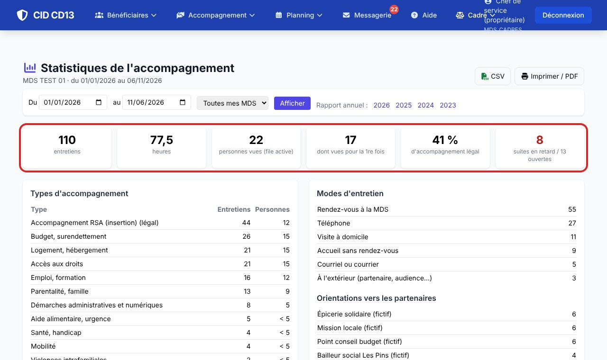
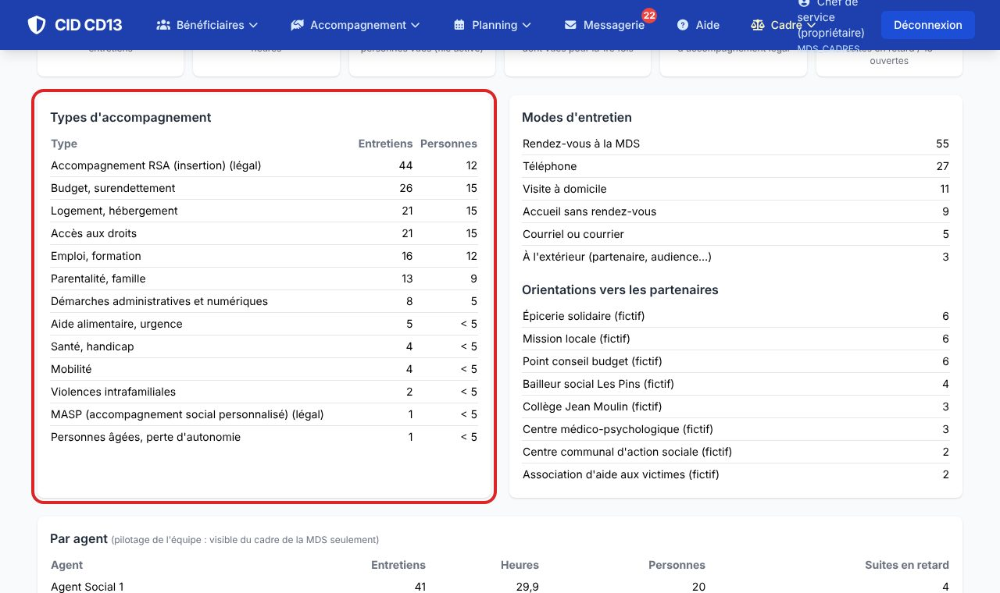
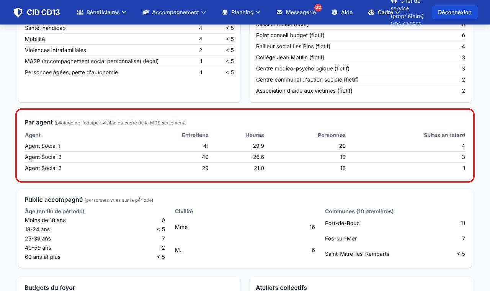
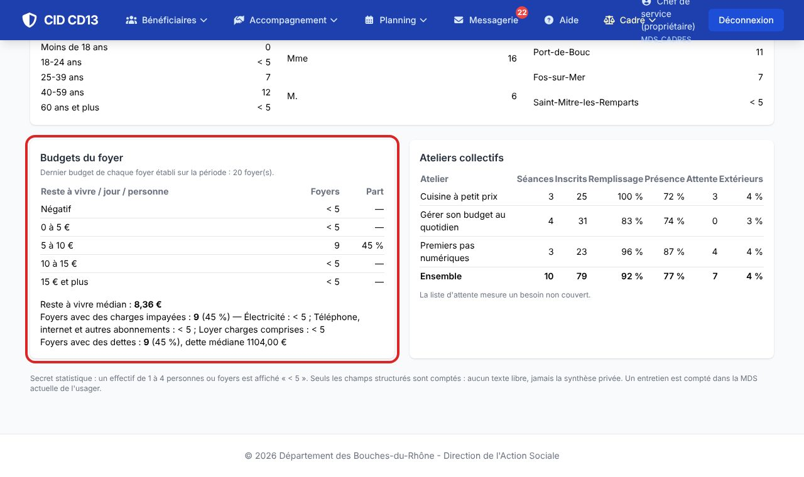
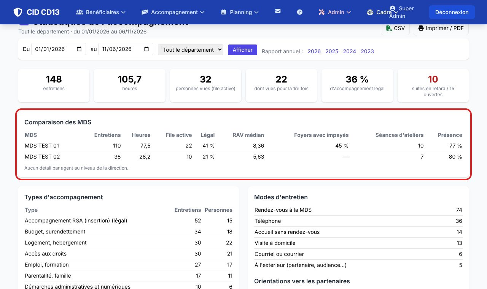

1Choisir la période

- Par défaut : du 1er janvier à aujourd'hui. Changez les dates, ou cliquez une année après Rapport annuel.
- Les cartes du haut : entretiens, heures, file active (personnes vues), personnes vues pour la première fois, part d'accompagnement légal, suites en retard.
- Imprimer / PDF donne une page propre pour le rapport ; CSV ouvre les chiffres dans un tableur.
2Lire l'activité

- Par type d'accompagnement : nombre d'entretiens et de personnes. Par mode : rendez-vous, téléphone, visite à domicile…
- Les orientations montrent vers quels partenaires la MDS oriente le plus.
3Piloter l'équipe (cadre de MDS)

- Pour chaque agent : entretiens, heures, personnes vues, suites en retard.
- Ce tableau n'apparaît que pour le cadre de la MDS : la direction ne le voit jamais.
4Budgets et ateliers

- Budgets : le dernier budget de chaque foyer établi sur la période, réparti par tranches de reste à vivre, avec la médiane, les impayés et les dettes.
- Ateliers : séances, remplissage, présence, et la liste d'attente, qui mesure un besoin non couvert.
5Comparer les MDS (direction)

- Avec le droit « statistiques du département », la page couvre toutes les MDS et ajoute le tableau de comparaison.
- Choisissez une MDS dans la liste pour voir son détail (sans le détail par agent).
Bon à savoir
- Secret statistique : de 1 à 4 personnes ou foyers, la page affiche « < 5 », sans pourcentage qui permettrait de retrouver le chiffre.
- Aucun texte libre n'est compté : ni les synthèses, ni les synthèses privées.
- Les chiffres valent ce que vaut la saisie : un entretien non noté dans le journal n'existe pas pour les statistiques.
- Un entretien est compté dans la MDS actuelle de l'usager.
- Rendez-vous, aides, RSA et IP gardent leurs propres pages de statistiques.
Et ensuite ?
Cliquez sur une image pour l'agrandir. Le cadre rouge montre où cliquer ou quoi remplir. Toutes les données affichées sont fictives.